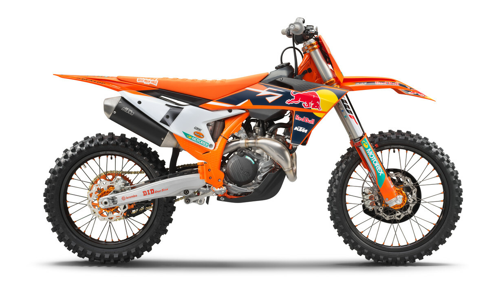

READY TO RACE has never been more accurately defined than with the 2022 KTM 450 SX-F FACTORY EDITION. With its development based on the success and feedback of Red Bull KTM Factory Racing riders around the globe, and 400-units-only exclusivity, it is the perfect mount for budding supercross champions.
